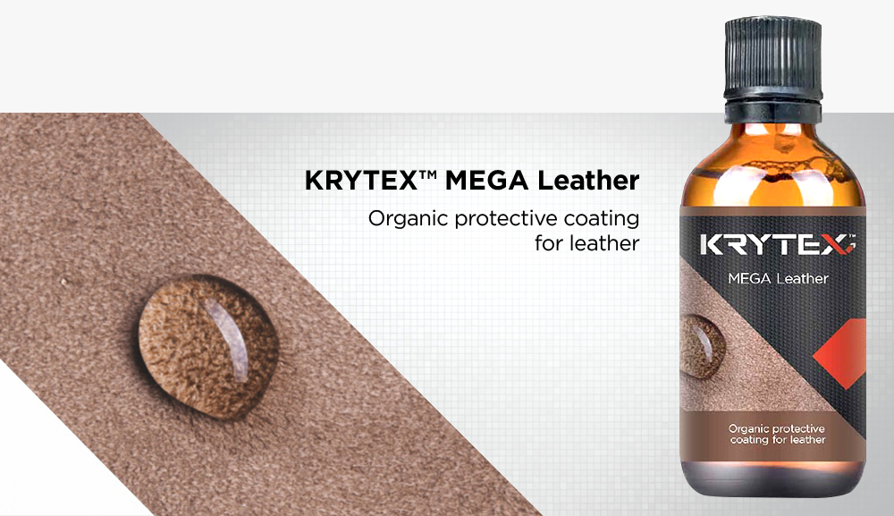
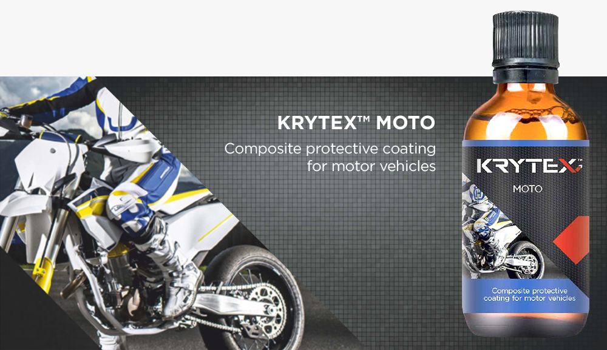
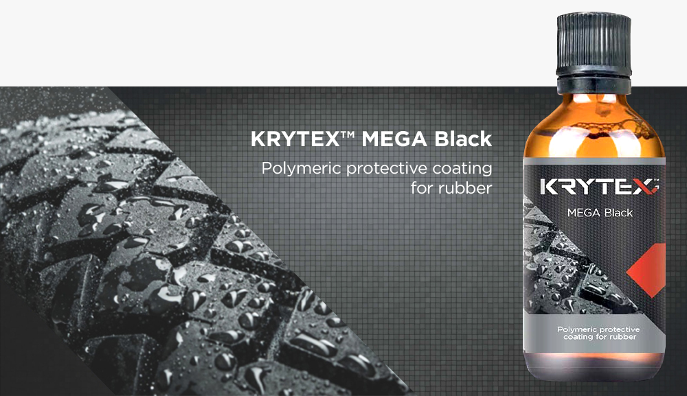

KRYTEX MEGA Leather
Organický ochranný povlak na kožu
Chráni kožu pred zafarbením od rifloviny
Chráni kožu pred rozpadom
Uľahčuje čistenie povrchu
Zachovajte prirodzený vzhľad kože

KRYTEX MOTO
Kompozitný ochranný náter pre motorové vozidlá
Povrch je mimoriadne hladký
Znížte množstvo nečistôt na motorových vozidlách a uľahčite čistenie povrchu
Môže byť použitý na ošetrenie vinylom a kovom
Chráni lakované prvky pred vyblednutím
Znížte možnosť čipovania
Znížte riziko tvorby a vývoja korózie
Znížte riziko poškodenia povrchu motorového vozidla na umyvárňach používaním nekvalitných chemických výrobkov a nízkou úrovňou prípravy personálu
Zvýšte lesk, hĺbku a intenzitu farby laku a laku

MEGA Black
Polymérny ochranný povlak na gumu
Chráni gumu pred praskaním
Udržuje prirodzenú farbu
Udržuje gumu čiernu až 3 mesiace
Pomáha chrániť gumu pred nečistotami a vodou